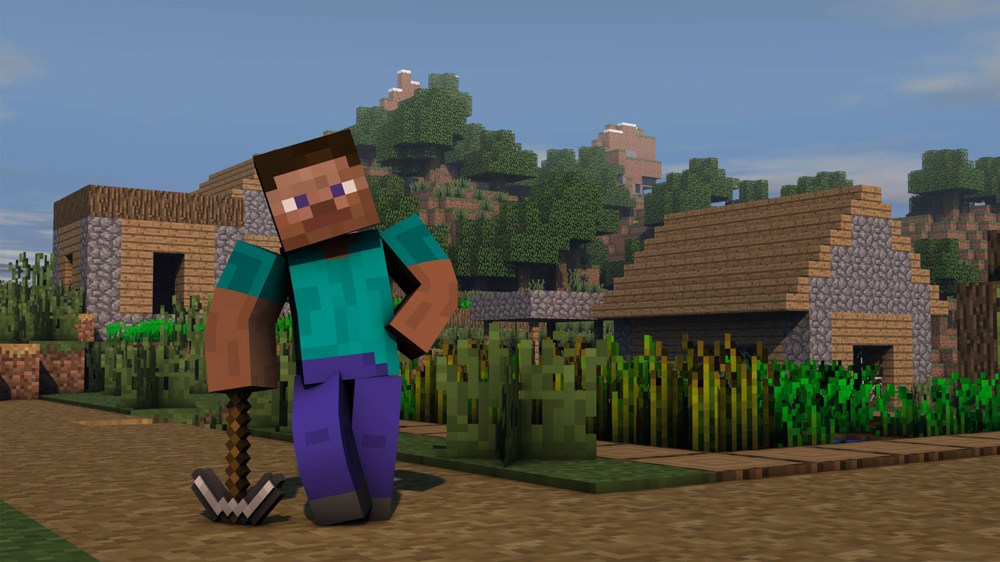
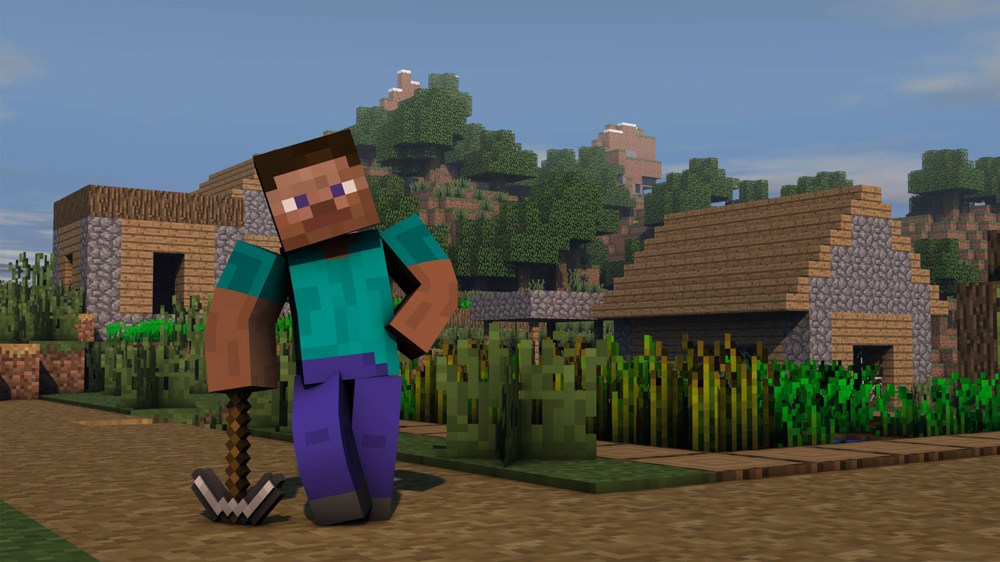

 Obrazek minecraft

Minecraft to jedna z najpopularniejszych gier wideo w historii, stworzona przez studio Mojang. Jest to produkcja typu sandbox, co oznacza, że gracze trafiają do otwartego, nieskończonego świata, w którym sami wyznaczają sobie cele. Całe otoczenie zbudowane jest z charakterystycznych sześciennych bloków, które można dowolnie niszczyć i stawiać
Podstawowym sposobem rozgrywki jest tryb Przetrwania (Survival). Gracz rozpoczyna grę z pustymi rękami i musi samodzielnie zdobywać surowce, takie jak drewno i kamień, aby wytwarzać narzędzia. Nocą świat staje się niebezpieczny, ponieważ pojawiają się potwory, takie jak Zombie, Szkielety czy słynne Creepery, dlatego budowa bezpiecznego schronienia jest priorytetem.
Dla osób, które wolą skupić się na budowaniu, przygotowano tryb Kreatywny. W tym wariancie gracz jest nieśmiertelny, potrafi latać i ma natychmiastowy dostęp do wszystkich przedmiotów w grze. To idealne miejsce dla artystów i inżynierów, którzy tworzą skomplikowane mechanizmy z redstone’a lub gigantyczne budowle.
Gra słynie z niesamowicie rozbudowanego trybu wieloosobowego. Tysiące serwerów na całym świecie pozwalają graczom wspólnie budować miasta, walczyć na arenach PvP lub brać udział w wymyślnych mini-grach. Społeczność Minecrafta jest bardzo aktywna, tworząc własne modyfikacje (mody), które całkowicie zmieniają rozgrywkę.
Oprawa wizualna gry jest unikalna i rozpoznawalna na pierwszy rzut oka. Choć grafika jest prosta i oparta na widocznych pikselach (voxelach), ma swój niepowtarzalny urok. Dzięki takiej stylistyce gra nie ma wysokich wymagań sprzętowych i jest dostępna na niemal każdej platformie, od komputerów PC po konsole i telefony.
Obrazek minecraft

Obrazek minecraft
| Nazwa Gry | Gatunek | Rok wydania |
|---|---|---|
| Minecraft | Sandbox | 2011 |
| mega fajna | super | gra |